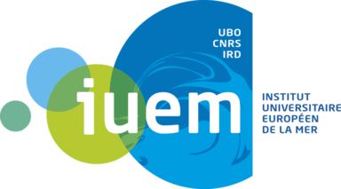

European University Institute of the Sea
Web Development
- - Setting up 4 WordPress site with page builder and plugins.
- - Creating Scripts bash for automatisation tasks using wp-cli.
- - Building a Directory Plugin to manage the personnel directory from the dashboard.
- - Editing functions.php, building Custom Post Types ( Projects Ongoing, Study Sites page, Portrait pages...).
- - Constraints : The lack of human resources (I was the only web developer), the availability of the participants.
Project management
- - Drafting specifications document.
- - Project planning and participation in the different phases.
- - Leading working group.